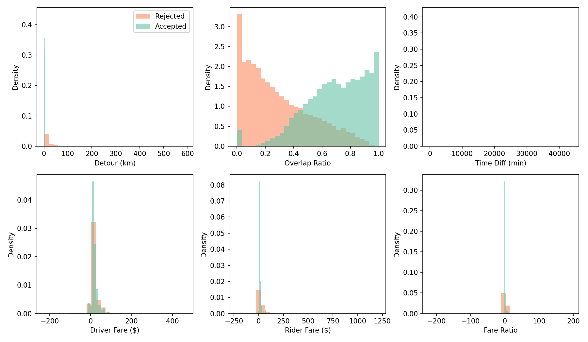
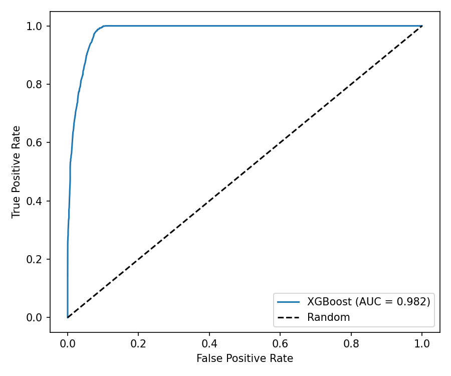
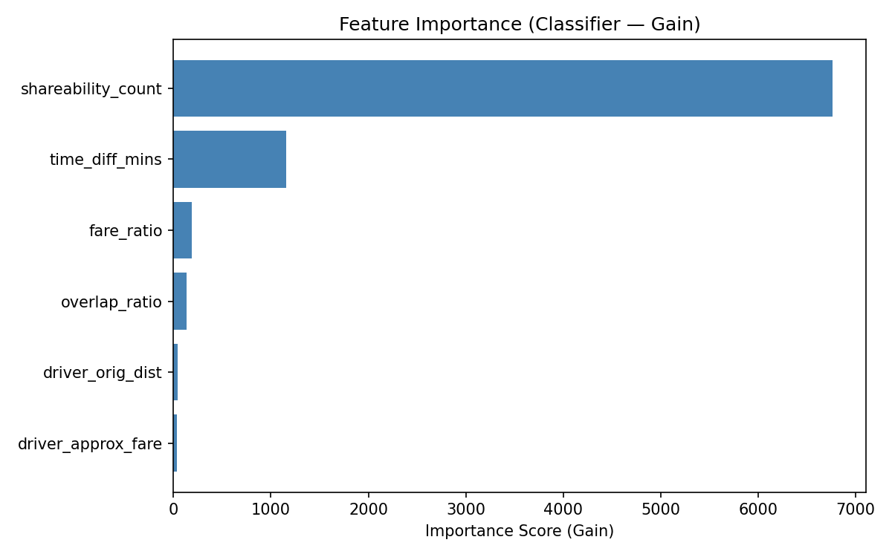
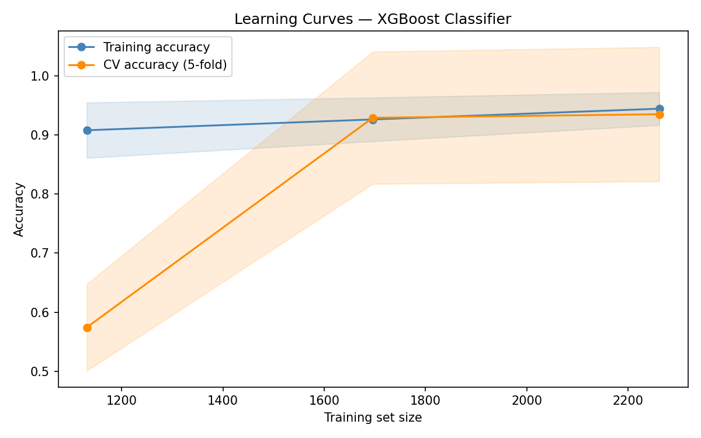
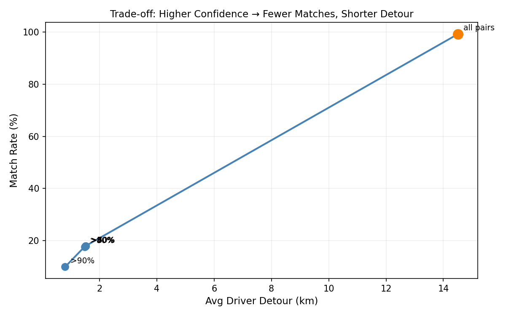

Incentive-Aware Multi-Objective Matching
for Peer-to-Peer Commuter Carpooling
CS6140 Machine Learning · Final Project
Krunal Savaj
Khoury College of Computer Sciences · Northeastern University
April 2026

Accepted pairs (green) cluster at lower detour and higher overlap ratio, confirming realistic label patterns
Result: Haversine distance of synthesized coordinates matches the real taxi meter distance exactly.
| Model | Accuracy | F1 | ROC-AUC |
|---|---|---|---|
| Rule-Based (distance cutoff) | 93.3% | 92.9% | n/a |
| Logistic Regression | 90.0% | 89.9% | n/a |
| XGBoost (tuned) | 94.0% | 93.9% | 0.982 |

ROC-AUC 0.982: 98.2% probability of ranking an accepted pair above a rejected pair. This is the key metric because bipartite matching uses scores as edge weights, not binary labels.

Feature importance by gain (XGBoost classifier). Higher = model splits on this feature more often and gains more information from it.

Train and CV accuracy converge as dataset grows, confirming the model generalizes rather than memorizes

Operators can tune the confidence threshold. Higher threshold = fewer matches but shorter driver detour. Orange dot = no threshold (all feasible pairs matched).
Future work: OSRM road routing [4] · Employer subsidies as ML features · Cross-city validation (Chicago) [9] · Real deployment feedback loop
Ride-Sharing and Matching
[1] Santi, P. et al. (2014). Quantifying the Benefits of Vehicle Pooling with Shareability Networks. PNAS, 111(37), 13290–13294.
[2] Bjorck, J. et al. (2021). Learning Augmented Methods for Matching. AAAI, pp. 15520–15521.
[3] Anagnostopoulos, T. & Ramson, S.R.J. (2025). A Vehicle Ride-Sharing Algorithm Assessing Passenger Satisfaction. Future Transportation, 5(2).
[4] Hsieh, F. (2017). Car Pooling Based on Trajectories of Drivers. IEEE AINA, pp. 972–979.
ML Methods and Tools
[5] Chen, T. & Guestrin, C. (2016). XGBoost: A Scalable Tree Boosting System. KDD, pp. 785–794.
[6] Grinsztajn, L. et al. (2022). Why Tree-Based Models Still Outperform Deep Learning on Tabular Data. NeurIPS, 35, 507–520.
[7] Omohundro, S.M. (1989). Five Balltree Construction Algorithms. ICSI Tech Report TR-89-063.
[8] Pedregosa, F. et al. (2011). Scikit-learn: Machine Learning in Python. JMLR, 12, 2825–2830.
Data
[9] Santos, A. et al. (2011). Summary of Travel Trends: 2009 NHTS. FHWA-PL-11-022.